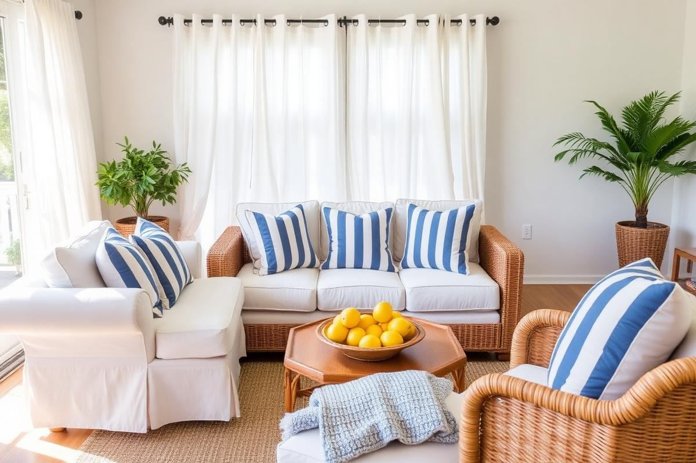

Summer Home Decor Ideas That Feel Effortless

Summer Home Decor Ideas That Feel Effortless is one of those topics where a little planning goes a long way. In this guide I walk through the process we use in real homes — not just what looks good in a photo, but what actually holds up over time.
Start here
Before you buy or move anything, measure the space and note how you actually use it. The best-looking room is one that matches how you live, so start with the routines: where you sit, where you drop keys, where the light falls in the afternoon.
The essentials
Focus on the pieces that do the most work. Get those right and the rest of the room comes together with much less effort. Aim for materials that patina rather than degrade, and colors you will still like in five years.
- Choose one clear focal point per room.
- Pick materials that improve with age.
- Layer textures instead of adding more colors.
- Leave visual breathing room — negative space is a design element.
Common mistakes
The mistakes we see most often are matching everything too tightly, over-scaling accessories, and skipping proper lighting. Fix those three and most rooms improve overnight.

The Curated Comfort Zone
Summer living calls for spaces that are as inviting as they are functional. Instead of a complete overhaul, focus on creating a 'curated comfort zone' in your most-used rooms. This involves identifying key pieces that elevate both aesthetics and utility. For instance, swap out heavy-pile rugs for flat-weave jute or cotton options. A 5x7-foot jute rug can anchor a living room seating area for around $150-$250, instantly brightening the space and making it feel more expansive. Consider lightweight throw blankets (think linen or a thin cotton blend) draped artfully over sofas or armchairs, rather than folded precisely; this encourages a relaxed, lived-in feel. A good quality linen throw from brands like Parachute or The Citizenry might run $120-$180, but its breathability and texture are unmatched.
The goal is to maintain a sense of airiness. Declutter surfaces, leaving only a few thoughtfully chosen items. A ceramic bowl filled with genuine sea glass (sourced ethically, of course) or a single, sculptural piece of driftwood can evoke coastal vibes without being cliché. Avoid overly themed decor; a touch of natural texture and light colors speaks volumes. This approach allows for easy transition into other seasons by simply swapping out these key elements.
Lighting Up Your Summer Nights
As the days lengthen, evening ambiance becomes crucial. Rather than relying solely on harsh overhead lights, introduce multiple layers of softer, warmer illumination. This is where strategic lighting makes all the difference. For outdoor spaces, string lights are a must. Look for commercial-grade LED globe string lights, typically around 24-30 feet long, which can be purchased for $50-$80. Ensure they are rated for outdoor use (IP44 or higher is ideal). Drape them diagonally across a patio or pergola, or create a 'canopy' over an outdoor dining area by crisscrossing them. Avoid hanging them too low, aiming for at least 7 feet of clearance.
Indoors, swap out cool-toned bulbs (5000K+) for warmer ones (2700K-3000K) in table and floor lamps. Add a small battery-operated LED lantern or a set of flameless candles with a timer function on shelves or side tables for a subtle glow. A set of three varying height LED pillars can be found for $30-$50. Even a single, strategically placed dimmable table lamp with a natural linen shade can vastly improve the evening mood in a living room. Position lamps to illuminate corners or art, rather than directly down into the seating area, preventing glare and creating depth.
The Power of Porches and Patios
Don't overlook the transformative power of your outdoor spaces. Even a small balcony or front porch can become an extension of your summer home. Start with a weather-resistant mat or rug; a 3x5-foot outdoor polypropylene rug can be found for $40-$70. This defines the space and adds a layer of comfort. Seating is paramount: consider two comfortable rattan or wicker chairs with outdoor cushions. A pair of decent quality chairs might cost $150-$300 from retailers like Target or Wayfair.
Add a small side table – a durable concrete or metal garden stool (around $60-$100) works perfectly for drinks or a book. Plants are essential. Opt for easy-care, sun-loving varieties like petunias, geraniums, or a small citrus tree in a terracotta pot. Use pots of varying heights and textures to create visual interest. For privacy or shade, a small outdoor umbrella (around $80-$150) or a strategically placed trellis with a climbing plant can make a huge difference. Remember to keep cushions and throws water-resistant or easily storable to prevent mildew and fading.
Seasonal Scents and Sensory Delights
Home decor isn't just about what you see; it's also about what you smell and feel. Incorporating seasonal scents can significantly enhance the summer atmosphere. Instead of heavy, spicy fragrances, opt for light, fresh notes like citrus (lemon, grapefruit), oceanic minerals, or subtle florals (orange blossom, jasmine). A high-quality essential oil diffuser with a blend of lemon and peppermint can refresh a 400-square-foot room for about $40, with oils costing $10-$20 per bottle. Avoid overpowering air fresheners; subtlety is key.
- Linen Sprays: A light spritz of a white tea or verbena scent on bedding and curtains can instantly evoke cleanliness and freshness.
- Fresh Flowers: Beyond aesthetics, blossoms like gardenias or peonies naturally scent a room. Replace water every two days to extend their life.
- Candles and Diffusers: Choose soy-based candles for a cleaner burn with notes like 'Coastal Breeze' or 'Sun-Drenched Linen'. Ensure they are placed safely, away from flammable materials.
Consider tactile elements like cotton or linen throws folded on a chair, a smooth ceramic coaster for cold drinks, or even the subtle coolness of stone accent pieces. These small sensory details collectively create a more immersive and relaxing summer environment, engaging more than just your sight.
Eco-Chic: Updating with Authenticity
Embrace sustainability by incorporating natural, handcrafted elements that tell a story. This ‘eco-chic’ approach not only feels authentic but also adds unique character to your summer home. Instead of mass-produced items, seek out pieces made from renewable resources or repurposed materials. For example, a hand-woven seagrass basket ($30-$60 for a medium size, 12-16 inches diameter) can serve as stylish storage for blankets, magazines, or even a potted plant. Its natural texture instantly adds warmth and a connection to nature.
Look for ceramics from local artisans or fair-trade sources; a simple, unglazed ceramic vase ($25-$50) can be a beautiful standalone piece or hold a few stems of eucalyptus. Consider furniture pieces made from reclaimed wood. A small side table or stool made from salvaged timber might cost $100-$200, offering a unique, rustic charm that factory-made items lack. Even smaller touches like linen napkins or unbleached cotton tea towels are subtle nods to a more sustainable aesthetic.
This isn't about perfectly matching sets but rather creating a cohesive look through texture and material harmony. The slight imperfections in handmade items add to their appeal, reflecting a laid-back, lived-in feel that embodies summer ease. It’s about conscious consumption that results in a more personal and inviting space.
Key takeaways
- Match the room to how you actually live.
- Anchor with one main piece and clear lighting.
- Layer textures, not colors.
- Leave breathing room around every object.
Frequently asked questions
Where should I start?
Start with the largest piece and the light. Everything else — art, textiles, small objects — is easier to place once those two anchors are set.
What is a realistic budget?
Prioritize the pieces you touch every day. Spend more on those and less on decorative items, which are easy to swap over time.
How long should this last?
A well-chosen main piece should last 10–15 years. Refreshes come through textiles, art, and accessories, not full replacements.

Sophia Bennett is a certified interior stylist and the senior editor at Styleire. She has spent more than eight years helping homeowners and renters create warm, functional interiors, with hands-on experience across small city apartments and family homes. Her work has been informed by close collaboration with independent designers, craftspeople, and product testers.
View full profile →Related reading

Small Balcony Decor Ideas: Turn 30 Square Feet Into a Room
A small balcony is not a wasted balcony. With three good choices, it becomes another room.

Outdoor Patio Styling Guide: Furniture, Rugs, and Light
A styled patio uses the same rules as a good living room — with materials that survive the weather.

Spring Home Refresh: 10 Small Changes
Spring Home Refresh: 10 Small Changes — a clear, editor-tested guide covering the essentials without the filler.